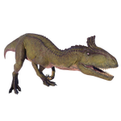

Useful Website
Cryolophosaurus is one of the largest theropods ever to have existed, measuring around 7m in length and half a tonne in weight. It was one of the first carnivorous dinosaurs, feeding on smaller dinosaurs and mammals. The name Cryolophosaurus, which translates to ‘frozen crested lizard’, is a reference to the striking crest on its head and the cold climate of its habitat, Antarctica.
